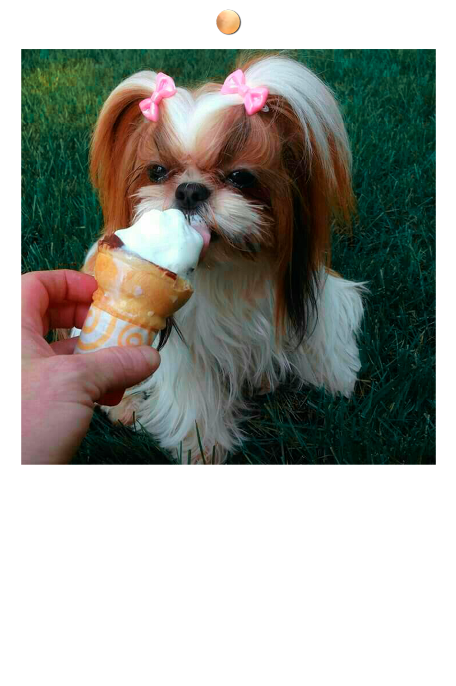

HELADOS PARA TU SHIH TZU
Con la llegada del verano y las altas temperaturas, es completamente normal ver a nuestro perro un poco acalorado, o bastante dependiendo de la zona donde vivamos. Dejar agua limpia y fresca siempre a su disposición es obviamente obligatorio, pero… ¿Y si además les damos algo sabroso y refrescante para soportar un poquito mejor el calor? Si, obviamente nos referimos a un buen helado para perros, sencillo de elaborar e irresistible.
Cómo poder, obviamente pueden y no sólo eso, sino que además les encanta. Pero los helados comerciales, los que a niveles generales comemos los humanos, no son nada sanos para nuestros perros (en realidad tampoco para nosotros). muchos de los helados comerciales pueden producirles diarreas , vómitos o incluso un exceso de glucosa, dado que los perros no tienen la adición al azúcar que tenemos los humanos y los helados comerciales están repletos de azucares. Obviamente si comen un poquito quizás no pase nada, pero no es lo más saludable para ellos.
La mejor opción es hacer nosotros mismos unos deliciosos helados para nuestro perro, son muy sencillos de hacer y también los podemos tomar nosotros. Recuerda que aunque un helado casero sea bueno para el perro, si lo toma muy rápido o en una cantidad excesiva, le va a sentar muy mal.
Debes dárselo para lo que lama y consuma poco a poco, si lo traga entero…. quizás seria mejor hacer alguno con forma más grande para evitarlo o simplemente ir dándoselo nosotros mismos poco a poco. Recuerda no poner nunca palillos ni objetos que puedan dañarlo dentro del helado.
La base de todas las recetas que podrás encontrar es el yogur apto para perros, debe ser un yogur natural y sin azucarar, es decir, con el menor número de añadidos posible. Cuanto más natural sea el yogur, mejor será para nuestro perro.
Podemos hacer un simple helado de yogur metiendo el yogur en el refrigerador / congelador / nevera…. y esperando a que se congele. Cuando esté congelado simplemente le quitaremos el envoltorio y dejaremos que nuestro perro disfrute de el. Algunas personas prefieren no darle tanta cantidad de yogur a su perro, bien por sus tamaño o por el motivo que sea. Podemos mezclar un yogur con medio vaso de agua y batirlo manualmente o con la batidora hasta que quede un liquido más o menos homogéneo.
De forma opcional se puede añadir también un poco de canela ya que es muy beneficiosa para los perros, además le dará un olor y sabor especial al helado, irresistible para nuestro perrito.
Helado de frutas
Esta receta es exactamente igual que la anterior, sólo que añadiremos la fruta que más le guste a nuestro perro para hacer el helado más sabroso aun. Además de sano, ya que ciertos tipos de fruta son muy sanos para nuestros perros.
Algunos ejemplos de frutas saludables son:
- banana
- manzana
- pera
- frutos rojos
- melon
- sanida
La receta consiste en añadir trozos de fruta enteros al helado, bien sea de yogur o de yogur con agua , antes de congelarlo. De esta forma la fruta quedará añadida al helado y nuestro perro se pondrá más feliz aun si cabe. Si no queremos usar trozos de fruta enteros, podemos batirlos junto con el yogur o yogur con agua y congelar el liquido resultante, que obviamente tendrá un gran sabor a fruta y todas sus propiedades nutricionales.
Helado de galetitas
Esta es sin duda la receta más intuitiva de todas, simplemente añadiremos galletas al yogur antes de congelarlo, o las batiremos con el yogur si no queremos que se queden en trozos.
Las galletas pueden ser galletas para perros o galletas naturales, evitando siempre darles galletas industriales repletas de azucares y/o conservantes.